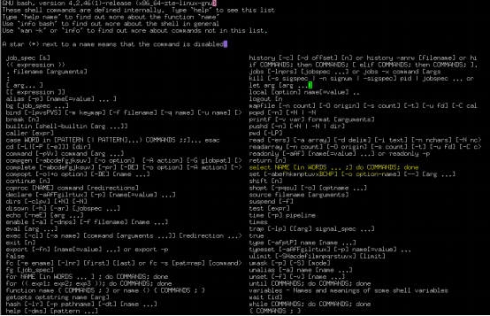
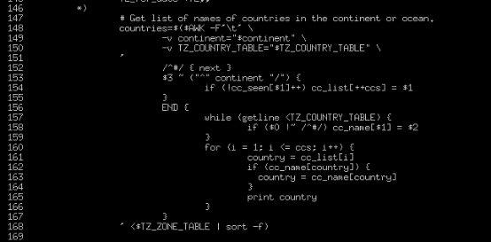
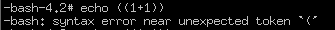

Bash源码分析(3)
周荣华
作者简介：10年通讯底层研发经验，熟悉linux/vxworks等实时操作系统的内核原理和实现，在虚拟化的openstack，kubernetes，docker等领域也初有涉猎。
摘要：本文继续解读bash中的函数，代码段，选择，算术运算和条件表达式，bash中支持的条件表达式那是相当的多。
3 bash使用到的主要数据结构介绍
3.8 FUNCTION_DEF
.files/InsideBashSourceCode(3)203.png)
FUNCTION_DEF由五部分组成，通用flags，起始行号，函数名，解析之后的函数执行体，如果函数定义在文件中，最后会有文件名。函数的定义也可以有入参，入参的提取和文件执行时类似的，都是走$1,$2类似的形式获得的。
.files/InsideBashSourceCode(3)316.png)
3.9 GROUP_COM
.files/InsideBashSourceCode(3)332.png)
GROUP_COM是个什么鬼？通过分析group的处理函数，发现group原来就是多个命令组成的命令段，一般用{}包围起来，从group_command_nesting变量的变化看，group是支持多层嵌套的。
.files/InsideBashSourceCode(3)440.png)
3.10 SELECT_COM
.files/InsideBashSourceCode(3)458.png)
SELECT_COM并不是每个版本的bash都存在，可以通过在bash里面敲help来确定其是否存在。下面这个bash 4.2.46的版本中是打开了select的开关的：

SELECT_COM的作用是为了生成一个简单的菜单，用户通过选择菜单来让系统执行对应的命令，常见的SELECT_COM是时区配置时使用的。
具体分析/usr/bin/tzselect源码时发现，为了做到各个shell之间的兼容，这个脚本写的比想象中要复杂的多。
首先要是一下版本号的记录：
.files/InsideBashSourceCode(3)695.png)
跳过紧接着的注释，然后是版本兼容性判断，使用帮助：
然后很无聊的定义了一个完全不用的变量IFS，但用来定义IFS的newline后面倒是用过。
为了规避bug，还要把PS3清空。
终于进正题了，先选择大洲或者大洋：
根据大洲或者大洋，通过awk汇总对应的国家列表：

二级select，选择国家：
再次祭出awk，通过国家汇总时区列表：
.files/InsideBashSourceCode(3)876.png)
第三重select，选择时区：
.files/InsideBashSourceCode(3)894.png)
计算好时区之后，出现第四重select，确认是否要修改：
还要判断一下当前是cshell还是其他shell，指导用户将当前的时区改到shell的启动脚本里面去（老大你写了这么多代码，不能自动把这句加进去么？还是要手动加L）。
3.11 ARITH_COM
.files/InsideBashSourceCode(3)1028.png)
ARITH_COM也是需要开关打开的，不过当前默认用的bash都是支持的，这个命令的意思是算术表达式，算术表达式要用(())包起来，要不然bash会不知道你想当做算术表达式使用，如果执行“echo 1+1”会怎么样？bash认为它是一个文本，直接将文本本身显示出来了J。
加上(())之后echo还是失败的：

再加一个$之后终于正常了：

实际操作的时候，发现[]包起来的算术表达式也能用，但不加$的时候不会报错，加了会触发求值：
通过查看代码，发现，只有(())是算术表达式：
而[]只是为了兼容posix.2d9的一种算术替换规则，也就是说$[1+1]是直接替换成了2，而(())还需要走到算术表达式求值过程（是不是有点饶J）。
3.12 COND_COM
.files/InsideBashSourceCode(3)1372.png)
COND_COM由六个属性组成，通用的flags和line。Type有6种，分别是与、或、一元、二元、最小单元、表达式。这样分类起始让人有点疑惑，其实所有表达式只有一元、二元、三元等等参数个数的区分，bash源代码为了yacc解析方便，把其中的与表达式、或表达式、不带任何表达式的变量或者常量和其他表达式区分开来识别。
.files/InsideBashSourceCode(3)1534.png)
条件命令使用的一元表达式有26个，区分大小写（真的很多，居然只用了一半，没有把26*2=52个字母全部用光，设计这个的老大还真是拼啊），下面简单过一下。
a/e判断文件是否存在；r/w/x判断文件是否可读或者可写或者可执行；o表示当前用户是否拥有该文件；G表示当前用户的组是否拥有该文件；N表示文件存在而且有新内容（从你上次读，文件被修改过）；f表示常规文件（设备文件返回false）。
d表示目录，s表示文件大小大于0，S表示socket，c表示是字符设备，b表示块设备，p表示有名管道，L/h表示符号链接：
.files/InsideBashSourceCode(3)1794.png)
u表示文件被设置了uid，g表示设置了组id，k表示sticky文件（对目录表示任何人都可以在该目录创建文件，但只能删除自己创建的文件，对可执行程序表示程序执行结束之后还会在内存待一阵子，方便下次再次执行的时候，不用从硬盘读到内存里面），t表示终端。
n表示脚本执行时存在至少一个参数，z表示没有带任何参数，o表示arg选项设置了，v表示变量存在。最后还有一个R，表示是否在命名表里面有索引。
二元表达式比一元表达式少了不少，总共
=，>=，<=，>，<，!=，这六个望文生义就知道什么意思了。
另外四个其他语言也经常会见到：-nt（newer than，表示文件修改时间更新），-ot（older than，表示文件修改时间更老），-lt（less than，更小），-gt（greater than，更大）。
还有五个：-ef（equal file，同一文件，不只是文件内容完全一样，而且需要文件指向的inode节点也完全一样），-eq（equal，算术相等），-ne（not equal，算术不相等），-ge（greater or equal，算术大于等于），-le（算术小于等于）。上面的算术计算，对字符串也试用。